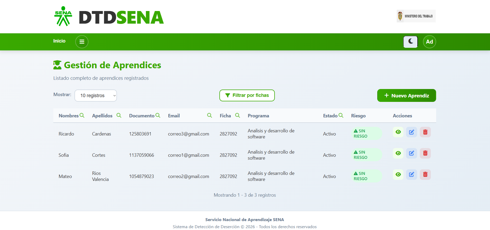
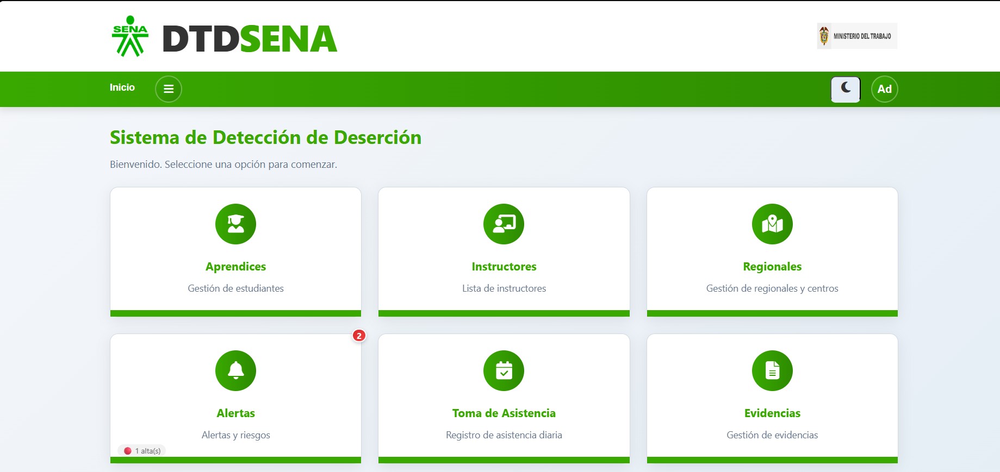
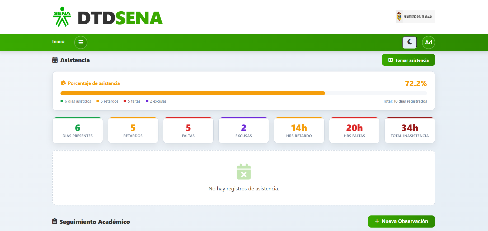
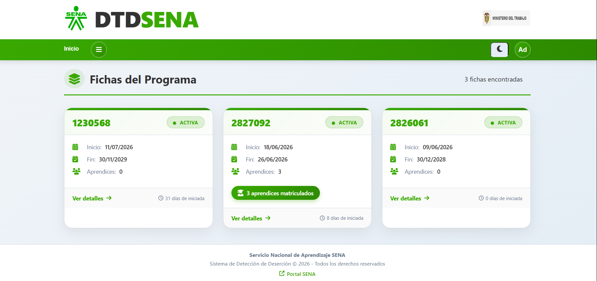

El proyecto DTD_SENA busca desarrollar un sistema web de detección temprana de deserción para el SENA, adaptado de la plataforma institucional SENA.
A través de esta plataforma, instructores y administradores pueden monitorear en tiempo real el rendimiento, asistencia y riesgo de deserción de los aprendices, con alertas automáticas y seguimiento académico integral.

This project develops a web-based student dropout detection system for SENA, adapted from the institutional platform.
The system enables real-time monitoring of academic progress, attendance, and dropout risk via an intuitive web interface. It provides automated alerts, academic observations, evidence management, and detailed dashboards.
Built with PHP 8, MySQL, JavaScript and Bootstrap 5, it prioritizes data security and fosters trust among instructors, administrators and learners.
El sistema DTD_SENA gestiona y monitorea el proceso formativo de los aprendices del SENA, detectando y previniendo la deserción estudiantil.
Desarrollado con PHP 8 + MySQL, implementa el patrón DAO y control de acceso por roles (Admin / Instructor).

La deserción estudiantil en el SENA afecta la calidad del proceso formativo y el desarrollo profesional de miles de aprendices en Colombia.
El sistema DTD_SENA centraliza el seguimiento académico, detecta tempranamente factores de riesgo y facilita la toma de decisiones oportunas en SENA Caldas.


conexion/ ├─ AlertaDAO.php ├─ AprendizDAO.php ├─ AsistenciaDAO.php ├─ centroDAO.php ├─ EvidenciaDAO.php ├─ FichaDAO.php ├─ HorarioDAO.php ├─ instructorDAO.php ├─ ObservacionDAO.php ├─ ProgramaDAO.php ├─ RegionalDAO.php └─ SeguimientoDAO.php